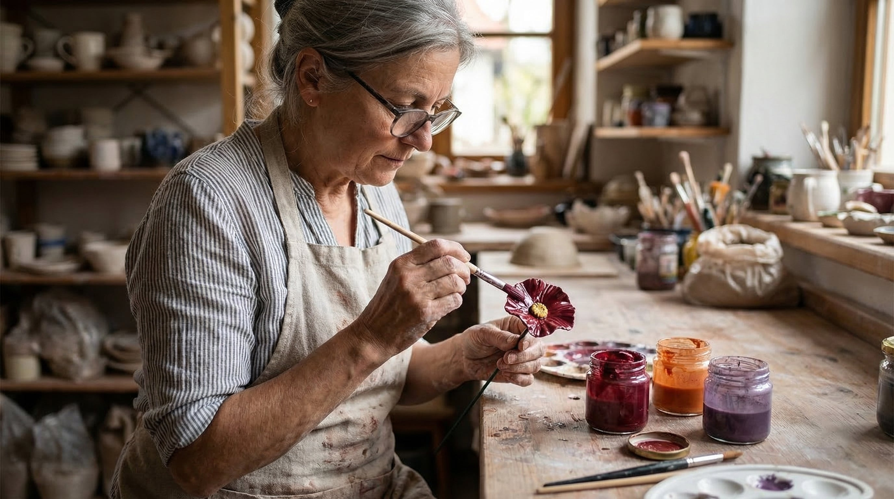
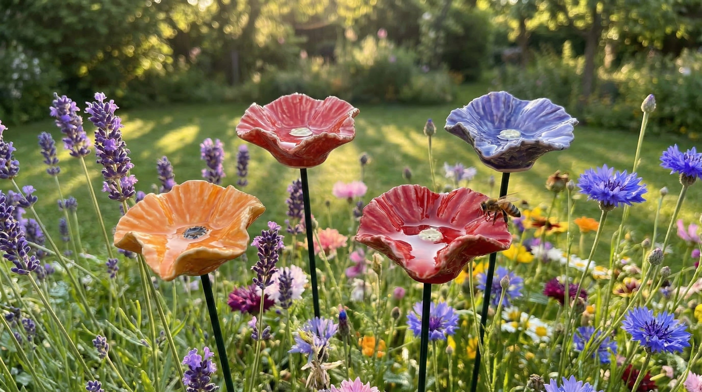
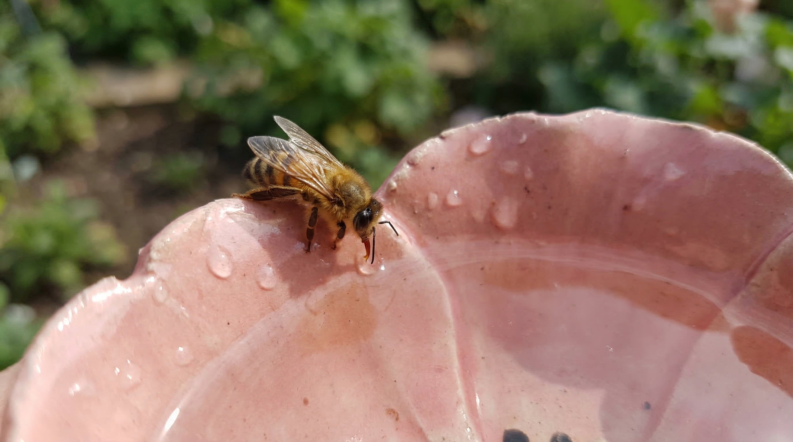
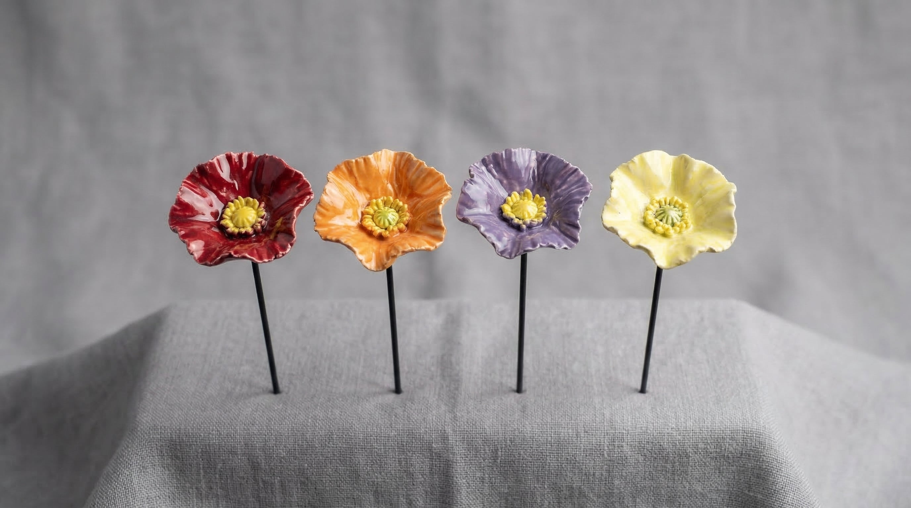
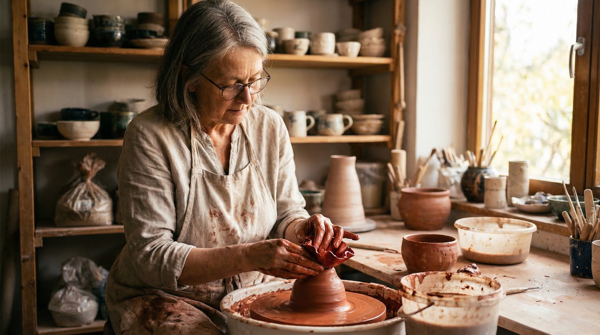
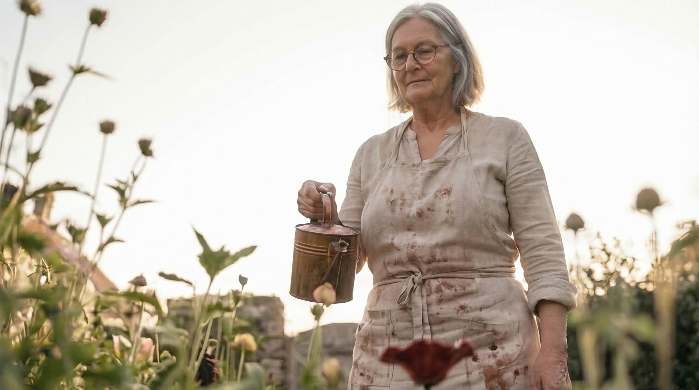

“A puddle on the road isn’t enough. Not in this heat.” — What a potter from Shrewsbury has been putting in her garden for 5 years so the bees still come.
What most people don’t know: the bees are doing far worse than you think — and one of the main reasons has nothing to do with pesticides. A potter from Shrewsbury figured that out 5 years ago. Every spring since, she puts the same handmade bowls into her flower beds.

Dorothy ‘Dot’ Callaway (64) in her studio behind the house. The glaze edges are mixed by hand — every colour is slightly different from the last batch. ‘That’s not a flaw,’ she says. ‘That’s proof it was made by a person.’
When was the last time you heard real buzzing in the summer? Not a lone wasp on a coke can. Real buzzing. A garden alive with movement from one flower to the next. Most people assume the bees are still fine — or that someone else is looking after them. The truth is a lot more uncomfortable. Habitat loss, climate change, pesticides and monoculture aren’t the only problem. In summer, bees also simply die of thirst — and it happens more often than anyone thinks.
What Most People Don’t Know — Bee Facts
48%
of managed honeybee colonies in the UK were lost in 2023/24 — the second-highest loss on record
2 Litres
of water a single hive needs per day in extreme heat — just to cool the colony
1 In 3
bites of food you eat depends on pollination — mostly by bees
9-10%
of bee species are threatened with extinction (with many more lacking data).
In extreme heat, bees stop foraging for nectar entirely — they search only for water. Everywhere. In rain gutters. On hot asphalt. In birdbaths that are too deep for them to drink from safely. Many drown trying. Others simply don’t find anything and don’t make it back to the hive.
“He Wanted To Give Me Something That Wouldn’t Wilt”
Dorothy — everyone calls her Dot — has been a potter for over 30 years. Her husband, Ray, kept bees in the garden for most of their marriage. When he got sick, he couldn’t manage the hives anymore. But he still wanted to do something for the bees. He wanted to give her something that wouldn’t wilt. One afternoon, Ray came home from the garden centre with a bag of cheap plastic flower stakes. ‘Even the bees deserve better than that,’ Dot told him. She went to her studio that evening and didn’t come out until midnight.

The next morning, she placed the first poppy bowl into the flower bed — a small ceramic blossom on a metal stake, shallow enough for a bee to land on the rim and drink without falling in. Ray had been a beekeeper for decades. He knew that bees need water sources near the hive, especially in summer. But birdbaths are too deep. Saucers dry out. Puddles evaporate in hours. The bowl had to be shallow enough, stable enough, and shaped in a way that a bee would recognise it. ‘If it looks like a flower, they’ll find it,’ Ray said. That was and the whole point.
The next morning, three bees were drinking from it.

A Bee Drinks Differently Than A Bird. Sounds Obvious. It Wasn’t, For Me.
Over the next five years, Dot refined the design. Every spring, she made a new batch. Every summer, she watched. She noticed which bowls the bees preferred, where they landed, how long they stayed. She adjusted the rim depth, the glaze texture, the colour, the angle of the petals. Nothing was left to chance — it was all observation.
What Dot learned in 15 years of watching
- 🐝 Bees navigate by flower shapes — the blossom form signals “landing pad” to a foraging bee. The shape matters more than the colour.
- 🐝 The rim depth — too deep and bees can’t reach the water without risking a fall. Too shallow and it evaporates before noon. Dot settled on about 1.5 centimetres.
- 🐝 A slightly rougher glaze on the rim — gives bees something to grip. Smooth ceramic is like ice to tiny legs.
- 🐝 In flower bed shade — the water stays cooler and doesn’t evaporate as fast. The bees find it because they’re already there.
- 🐝 Clean water — bees won’t drink from stagnant or contaminated sources. A quick rinse and refill each morning keeps them coming back.
“I didn’t read that in a book. I watched it happen. Summer after summer.”
Fifteen years of watching. Fifteen years of adjusting. Not in a lab. Not with a grant. In a flower bed behind a pottery studio in Shrewsbury. That’s where the BeeBlossoms were born.
They Look Like Poppies. The Bees Can’t Tell The Difference — And That’s The Point.
When the bowls are placed in a flower bed, they don’t look like garden accessories. They look like flowers. That’s deliberate. Bees recognise shapes, not brands. If it looks like a poppy, it gets investigated. If it holds water, it gets remembered.
“I fill them every morning,” Dot says. “With the watering can I’m already holding. Ten seconds. Then I watch who shows up.”

The 4-piece set comes in random colours — red, orange, purple, and pale yellow — because in nature, no two flowers are the same.
- Shape from 15 years of observation — not designed on a computer. Designed by watching bees land, drink, and come back.
- Handmade ceramic — every bowl is shaped individually on the wheel. No two are identical.
- Garden shade advantage — the bowl sits at flower level, in the shade, where the water stays cool and the bees already forage.
- Clean water, easily refilled — a quick rinse and top-up each morning takes about ten seconds.
- Blossom shape as a signal — the poppy silhouette is something bees already recognise and trust.
- 4-piece set in random colours — red, orange, purple, pale yellow. The variety mimics a natural flower bed, which attracts more visits.
UPDATE: Dot is moving this summer and won't be making any more after this. To make sure every last set of Dot's BeeBlossoms finds a garden before the bees need them most, she's letting the remaining sets go at 50% OFF. This is the final batch — when it's gone, it's gone for good.
See what's still available here >>
In Winter I Make Pots. In Summer I Belong To The Garden.
Dot still works in the same studio Ray built for her in 1998. In the winter, she makes regular pottery — mugs, bowls, plates for the local market. But from March to September, the wheel is only for BeeBlossoms. ‘It’s the only thing that matters now,’ she says. ‘Everything else can wait until the frost comes back.’
Last year, her granddaughter Emily set up a small online shop to help with the orders. ‘Nan was sending them in shoeboxes with handwritten notes,’ Emily laughs. ‘I told her we could probably do slightly better than that.’
What Customers Are Saying:
“I put them in the lavender bed and couldn’t believe how fast the bees showed up. Within an hour of filling them. Now I refill every morning and it’s become part of my routine. My neighbours keep asking where I got them.”
“Got these for my mother-in-law who keeps a pollinator garden. She was skeptical at first but now sends me photos of the bees every week. She says they’re the most beautiful thing in her garden — and the most useful.”
“Beautiful, delicate colours and clearly handmade. You can see the brush strokes in the glaze. I bought two sets — one for my balcony and one for my sister’s garden. Both have bees visiting daily. Highly recommend.”
30-Day Satisfaction Guarantee
Put the bowls in your garden. Watch who comes. If you're not convinced — send them back, no questions asked.
Dot spent fifteen years giving these away, not selling them. This isn't the kind of work that comes with fine print.
Our Garden Hums Again. I Wish The Same For Yours.
Dot still refills every morning. Same watering can. Same flower bed. Same quiet satisfaction when the first bee lands. ‘Ray would have loved seeing how far this has gone,’ she says. ‘But honestly, he’d just be glad the bees are still coming.’
“Four bowls. One flower bed. Ten seconds every morning. That’s all it takes.”

The set includes 4 handmade ceramic poppy bowls on metal stakes in random colours (red, orange, purple, pale yellow). Suitable for garden, balcony, and patio. Free shipping. Delivery in 5–7 business days.